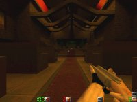
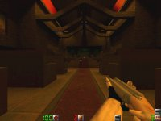
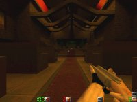

Map name: Church of Doom
Map author: steve towel
Map filename: cdoom.zip
Reviewed by: pimpdaddy fredo [fredo1@earthlink.com]; Whatever [jinman@qis.net]

-pimpdaddy fredo
Review:
This map is awesome!
It's got a "churcH"-type building, the underground library, an outside area including a long winding tunnel, and it is a LOT of fun! No matter how many players this map rocks. When there's 3-5 you just snipe, but when there's over 8 the fun really starts and the blood really flies. I've have some of my best games playing on cdoom with about 10 people all fighting over the M4 user and the handcannon.
If a player can get either weapon the frags really mount!
Graphics:(i use software mode so i really don't know but i'd give it a) 4 outta 5
Playability:I can't think of anywhere anyone can get stuck or any texture mess-ups so:5 outta 5
Textures:Very cool and very "church-like" inside the "church":5 outta 5
Lighting:Just right from a software point of view. I bet w/ a 3d card it'd be even cooler w/ the colored lighting. 5 outta 5
Players:Any number will work! The more the bloodier! =-)
Rock on!
-Whatever